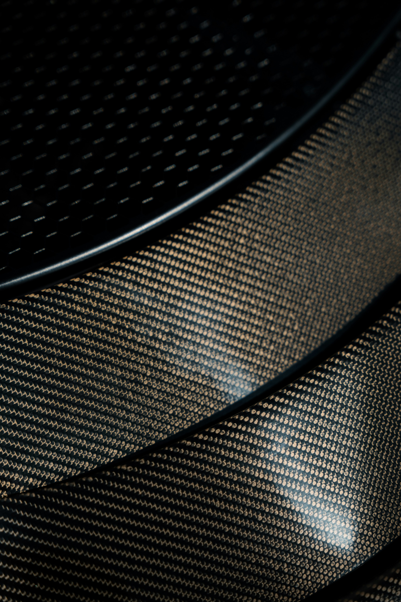
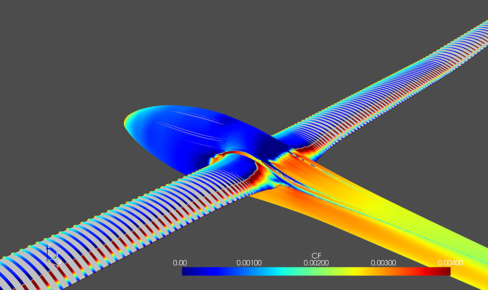
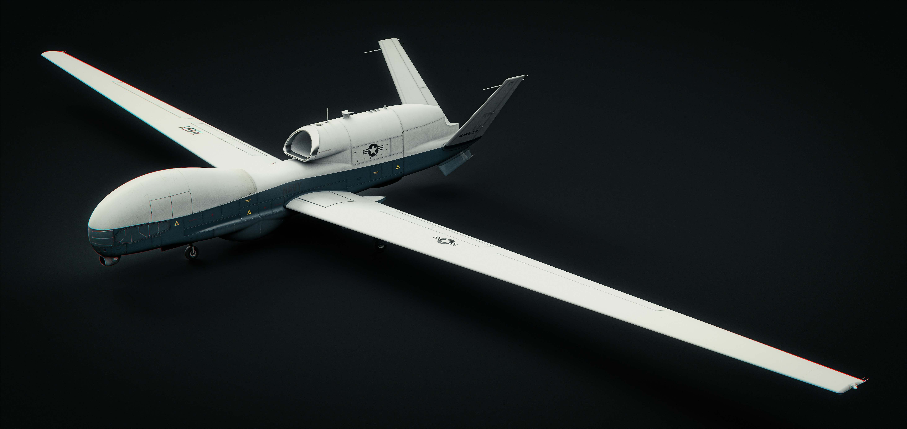

Divisioni Operative

Strutture & Materiali
Modellazione CAD parametrica, validazione delle scelte progettuali, calcolo strutturale FEM e test di fatica sui materiali per resistere ad alti carichi.

Aerodinamica & Propulsione
Simulazioni CFD avanzate, studio e ottimizzazione dei profili alari. Analisi termofluidodinamica e integrazione del sistema propulsivo nel telaio.

Elettronica & Avionica
Progettazione di schede logiche dedicate, implementazione della sensoristica di bordo, cablaggi schermati e sistemi hardware per l'acquisizione dati.

Software & Controlli
Sviluppo del codice di volo, implementazione di algoritmi per la stabilizzazione e il controllo spaziale, gestione e pulizia dei dati acquisiti durante i test.

Media & Branding
Gestione integrale del sito web, produzione di grafica e materiale fotografico. Promozione dell'identità dell'associazione e organizzazione eventi in campus.

Corporate & Partnership
Ricerca vitale di sponsor tecnici ed economici. Gestione della documentazione per l'Ateneo, stesura bilanci e allocazione strategica dei fondi ai reparti tecnici.